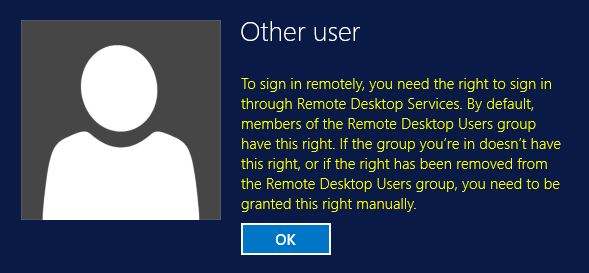
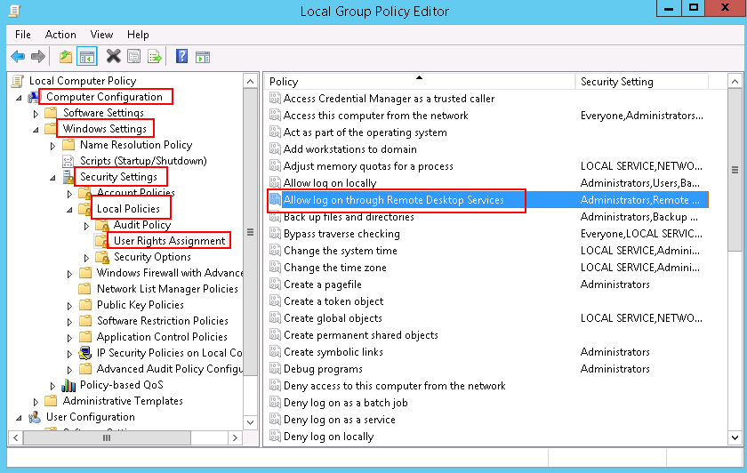
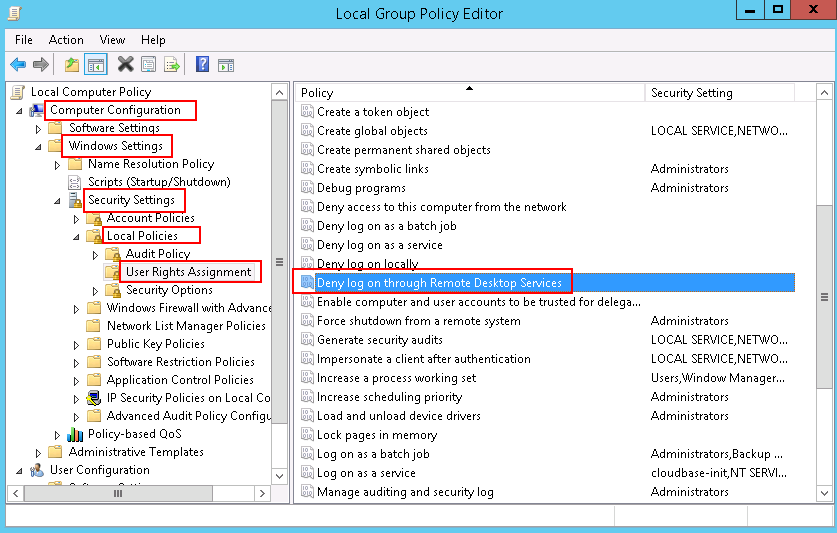

Symptom
When you connect a remote desktop to a Windows ECS, the system prompts that you need to be granted the right to sign in through Remote Desktop Services.
Figure 1 Remote login right missing.

Solution
- Open the cmd window and enter gpedit.msc.
- Click OK to start Local Group Policy Editor.
- Choose Computer Configuration > Windows Settings > Security Settings > Local Policies > User Rights Assignment.
- Locate and double-click Allow log on through Remote Desktop Services. Ensure that Administrators and Remote Desktop Users have been added.
Figure 2 Allow log on through Remote Desktop Services properties

- Locate and double-click Deny log on through Remote Desktop Services. If the administrator account exists, delete it.
Figure 3 Deny log on through Remote Desktop Services properties
